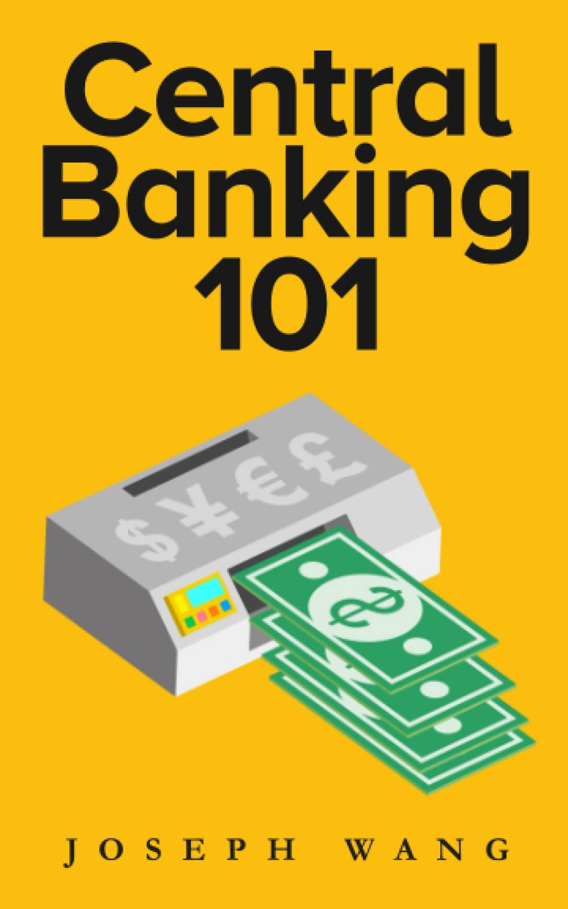

Central banking 101

Notes
I - Types of money
p13 - In a functional financial system, fiat, deposits, reserves & treasuries are convertible into each other.
p15 - Only Fed can create reserves. In open market operations (OMO) the Fed use reserves to buys treasuries in reserves. When it buys treasuries from non-banks, it needs a bank to mediate the transaction. Commercial banks can convert reserves -> fiat but this is negligible. Reserve is cash.
p17 - Banks settle payments with reserves. p20 - Banks create deposits out of thin sur when make a loan. In volume, deposits >> reserves. Banks can borrow reserves from other banks on the Federal Funds market. Bank deposits are a cash abstraction
p21 - wildcat banking days, every bank had their own notes in 19th century. > Ok but how did you settle payments between banks at the time? Is this the reason for central banking? And crypto today?
p12 - Treasuries is money that pays interest (cf Kelton) p24 - Treasuries are fully backed by gvt, money for large investors p27 - Everyone expects to be able to quickly convert their treasuries in bank deposits Treasuries are a focal point in the financial system
p33-34 - The level of bank deposits is an indicator of the level of loans made by the system (destroyed when loan is repaid)
II - Money creators
p36 - Fed sees through the lenses of interest rates, and r* the neutral rate of interest (!!!) at which the economy is neither expanding nor collapsing.
p40 - QE was meant to push interest rates lower to bring inflation up, but it mostly brought the price of financial assets up with no impact in the “real” economy. > Because Basel III they needed to hold part of their reserve in treasuries; those became more rare.
p48 - Commercial bank money creation is limited by investment opportunities available. Supply of money (deposits) depends on the real economy. > How is inflation related to this?
p48 - Public data available on banks: weekly H8, call reports, BIS data.
p50 - Treasury issues debt at regular pace to guarantee stability (market can digest). Exceptional needs are met by debt that matures < 1Y.
p53- no one knows what the limit to debt issuance is. > can we find out ?
TODO Plot interest rate vs maturity (30Y->1Mo) over time (alpha=.01)
TODO How could we figure out what the limit to debt issuance is?
III - Shadow banks
p55 - dealers, money market funds, ETF, investment funds and securitization vehicles > Pension funds take exceedingly risky behavior because it’s a scam La retraite par capitalisation a les mêmes problèmes que la retraite par répartition
p56 - Primary dealers are the only ones from whom Fed buys treasuries. p58 - They do matched book repo trades. Borrow repo loans. Depend on overnight loans. Considered shadow banks because exposed to the same kind of risk. Bear Stearns died from banks not wanting to renew their loans. p60 - Repo rates incident in Sept. 2019, Fed stepped in and bailed them out.
> How is risk related to loan maturity?
p67 - mREITS buy mortgages an finance them with shorter term loans. That’s how they absorb risk for all of us. p73 - with securitization of loans commercial banks shifted their business model from rating interests on loans to earning fees on originating loans. They did not hold the loan themselves, risk borne by securitization investor. Banks earn fees, not interests, on loans
IV - Eurodollar markets
p.80 - offshore loans in USD far surpass those in other currencies. 50% global trade invoiced in dollars.
p99 - Explains how eurodollar transactions must have a link to the us banking system (since banks transfer in reserve). p100 - And US gvt can why anyone out of that system as a result. Most powerful non lethal weapon in the world. Iran needs to sell oil to get paid in gold.
p101- "The dollar is our currency but your problem"
p103- Fed cannot bail out offshore banks, but it did with the FX swap line in 2008. Now the world’s central bank.
V - Interest rates
p105 - "Assets cost money and interest rates determine how much money costs" Treasuries are considered risk-free so form basis on which every risky investment is judged. Yield has a huge impact on everything else.
p109 - Fed controls short term not so much long term (too many factors). sept 2019 again. nrCentral banks only control short-term interest rates
p111 - Long term rate = expectation for part of short term rate + term premium. Eurodollar futures = most reflective of economic fundamentals.
p116 - Trade deficit leads to foreign countries holding dollars and buying treasuries.
p118 - Inverted yield curve = expect recession